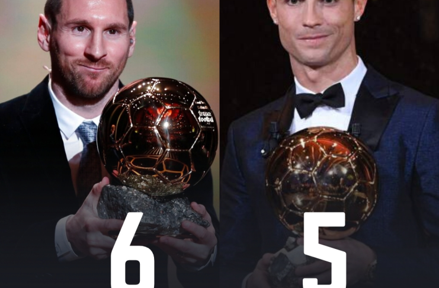
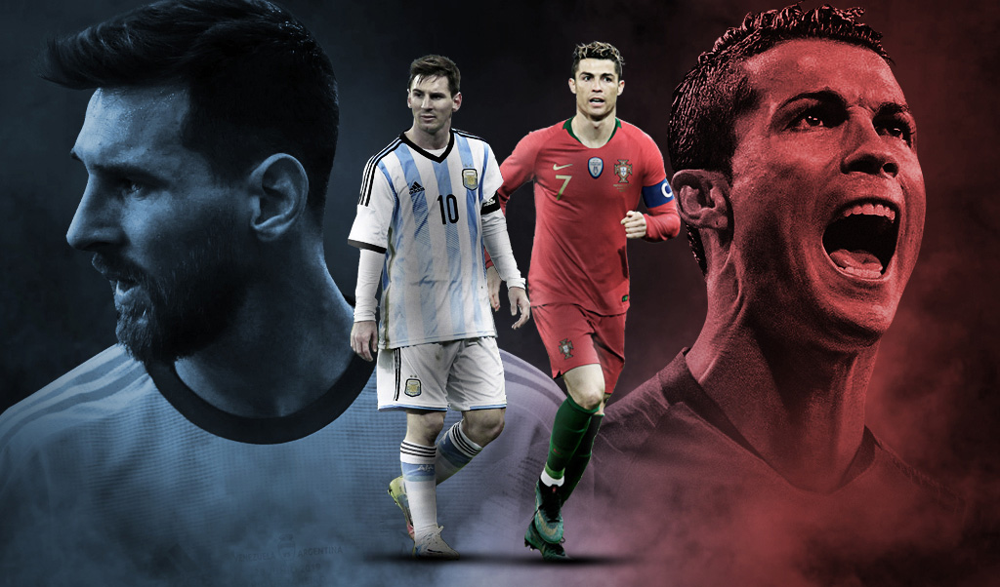

Messi y Cristiano ronaldo son los maximos goleadores de los ultimos tiempos ambos son los
maximamos ganadores del balon de oro, messi con 6 botas de oro y CR7 tiene 5 botas de oro.

Ver mas noticas sobre el futbol (da clip al botón!!!).. Mas informacion
Noticas del futbol
El diario L'Equipe realizó un análisis tras las primeras 11 fechas de la competencia e identificaron indicios de una recuperación económica y social del fútbol francés tras la pandemia. Y aseguran que, uno de los grandes motivos, es la presencia de la Pulga.
En otras noticias el América fracasa en el Apertura 2022 y se une a los dolorosos momentos del club,A lo largo del Apertura 2022, el América fue un equipo arrollador. 14 partidos consecutivos en los que no conoció la derrota. Mostraron un nivel de juego que ilusionó a sus aficionados con su anhelado decimocuarto título de Liga MX y extender su legado como el más ganador del fútbol mexicano, pero eso solo quedó en eso, en una ilusión.
El partido Barcelona vs Bayern Múnich, jornada 5 de la Champions League 2022/2023, se podrá ver por televisión en directo a través del canal Liga de Campeones de Movistar necesita ganar para tener esperanzas de pasar a las siguientes rondas.
Ya hay finalistas en el futbol mexicano toluca vs pahuca la gran final.
Las noticas mas importante
psg vs maccabi haifa
RB Leipzig vs Real Madrid
Mas partidos del dia de hoy
Videos de esta semana sobre el futbol
Titulares la mejores noticas del dia sobre el futbol
RUMORES y FICHAJES | EUROPA quiere a LUIS CHÁVEZ | SANTI aún SUEÑA con el MUNDIAL
BARÇA quiere VENGANZA vs BAYERN | CAE el MADRID; MESSI-MBAPPE imparables | ¿Preocupa HAALAND a PEP?
Ya ven al BARÇA en Europa League! | Almirón ‘calla’ a Grealish | ¿CR7 a Italia? | PSG niega TODO
 Noticas del futbol
Noticas del futbol Las noticas mas importante
Las noticas mas importante